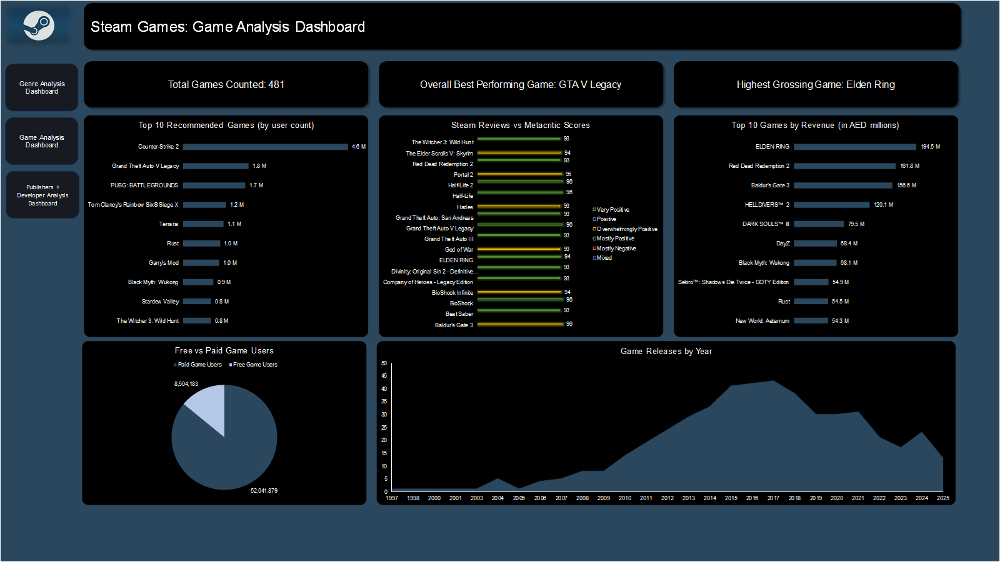
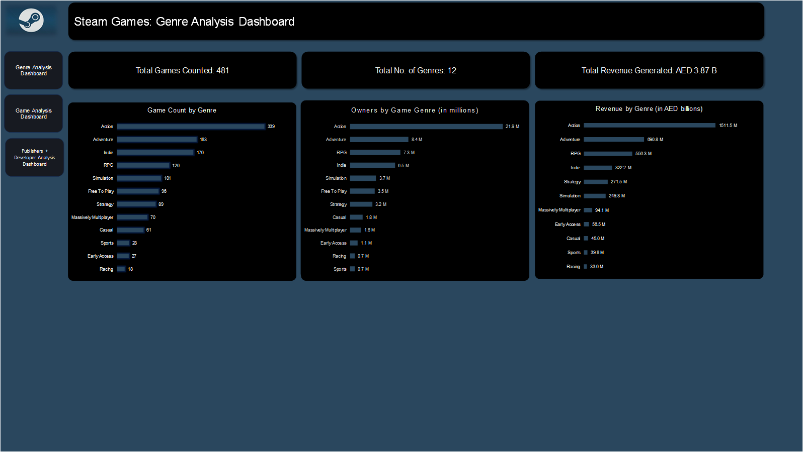
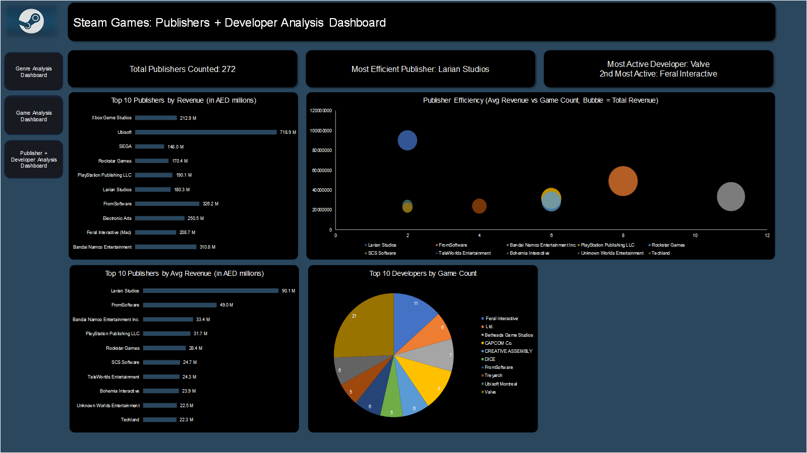

Steam Games Industry Analysis Dashboard
Complete gaming industry analysis using Python web scraping and advanced Excel analytics
Project Overview
This comprehensive gaming industry analysis project combines Python web scraping with advanced Excel analytics to decode Steam's marketplace dynamics. Using data from 481 Steam games, I built an end-to-end pipeline that reveals genre performance, publisher efficiency, and revenue patterns across the gaming industry.
What started as a technical challenge became a deep dive into gaming industry economics. The project required solving complex data quality issues, developing proxy metrics for unreliable data, and creating interactive dashboards that translate technical analysis into actionable business insights for gaming industry stakeholders.
Technical Implementation
Data Collection & Processing
- Python Web Scraping Pipeline: Custom scraper integrating Steam Store API, store page scraping for ownership data, and Steam Reviews API for comprehensive game metadata
- Data Quality Management: Identified and corrected unrealistic ownership estimates (trillions in revenue) by pivoting to recommendation counts as reliable proxy metrics
- Multi-source Integration: Combined pricing, reviews, ownership estimates, and metadata across 481 games with robust error handling and rate limiting
Advanced Excel Analytics
- Power Query Transformations: Complex data cleaning including date standardization, multi-value field expansion, and category filtering
- Three-Sheet Architecture: Raw data preservation, cleaned single-game analysis, and exploded multi-row format for granular insights
- Interactive Dashboard Design: Professional Steam-branded styling with cross-dashboard filtering and dynamic calculations
Key Business Insights & Gaming Industry Analysis
Genre Performance Dynamics
- Action Genre Dominance: 21.9M average users and AED 1,511.5M revenue confirm historical gaming preferences, but Sports/Racing underperforming below Casual games suggests platform-specific audience differences
- Premium Strategy Validation: Strategy and Simulation genres show higher revenue per user, indicating successful premium pricing opportunities for complex gameplay experiences
- Market Maturation Indicators: 178 Indie games represent largest category by volume but lower individual revenue, showing market democratization trends
Publisher & Developer Intelligence
- Efficiency Leaders: Larian Studios emerged as most efficient publisher with highest revenue-to-game ratio, demonstrating quality-over-quantity approach success
- Platform Advantage: Valve's dominance as developer makes sense given platform ownership, but absence from revenue rankings reflects free-to-play focus with microtransaction models
- Surprise Performers: Feral Interactive's high ranking reveals successful cross-platform porting strategy, showing value in technical specialization over original development
Market Dynamics & Trends
- Review-Sales Disconnect: Minimal correlation between review scores and commercial success indicates marketing, pricing, and brand recognition drive purchases more than user ratings
- Rapid Success Patterns: Black Myth: Wukong's top 10 recommendation status despite recent release shows how exceptional titles can achieve mainstream breakthrough in traditionally niche genres
- Historical Context Validation: 2018-2020 peak in game releases aligns with industry golden age including major titles and pandemic gaming boom
Interactive Dashboard System
Game Analysis Dashboard

Individual game performance analysis featuring top performers by recommendations and revenue, Steam vs Metacritic score comparisons, and release timeline trends. Interactive filtering enables deep-dive analysis of specific games and performance patterns.
Genre Analysis Dashboard

Comprehensive genre performance breakdown showing game count distribution, average ownership by genre, and total revenue generation. Reveals market opportunities and audience preferences across different game categories.
Publisher & Developer Analysis Dashboard

Publisher efficiency analysis with revenue rankings, market share distribution, and developer productivity metrics. Features bubble chart visualization showing relationship between game count, average revenue, and total market impact for strategic industry insights.
Technical Challenges & Solutions
Data Quality & Reliability Issues
The biggest challenge emerged when initial ownership data produced unrealistic revenue figures in the trillions. Rather than accepting flawed data, I conducted thorough validation and pivoted to recommendation counts as a more reliable proxy metric. This decision required rebuilding significant portions of the analysis but resulted in business-relevant insights.
Complex Data Structure Management
Games with multiple genres, developers, and categories created data complexity requiring careful architecture. I implemented a three-sheet system: preserved raw data for reference, cleaned single-row format for game-level insights, and exploded multi-row format for category analysis. This structure enabled accurate analysis without double-counting while maintaining data integrity.
Excel Performance Optimization
Handling 481 games across multiple attributes pushed Excel's limits. I optimized performance through strategic use of Power Query for heavy transformations, pre-scaled large numbers to avoid formatting issues, and designed modular dashboards that balance interactivity with performance. The result is professional-grade analytics entirely within Excel's ecosystem.
Gaming Industry Perspective
As both an analyst and gamer, several findings challenged my expectations:
- Genre Surprises: Sports and Racing performing below Casual games contradicted expectations about dedicated fanbases, highlighting platform-specific audience differences
- Rapid Market Shifts: Black Myth: Wukong's immediate success in traditionally niche Souls-like category demonstrates how exceptional execution can break genre boundaries
- Data Limitations Impact: Missing major titles like Dota 2 from the dataset would significantly skew free-to-play analysis, emphasizing importance of comprehensive data collection in industry analysis
- Platform Dynamics: GTA V Legacy's removal from active sale corrupting revenue analysis shows how platform changes affect historical market research
Project Impact & Business Value
Demonstrable Skills
- End-to-end data pipeline development from web scraping to interactive dashboards
- Advanced Excel mastery including Power Query, pivot tables, and professional dashboard design
- Data quality management and proxy metric development for unreliable data sources
- Industry domain knowledge application to validate and contextualize technical findings
- Business insight translation from complex technical analysis
Real-World Applications
This analysis framework could be applied to competitive intelligence, market entry decisions, publisher partnership evaluations, and genre-specific investment strategies in the gaming industry. The methodology demonstrates capability to handle ambiguous data sources and extract actionable insights for strategic decision-making.
Project Outcome
This 5-day intensive project represents a significant evolution from my first e-commerce analysis. Where that project taught me foundational skills, this gaming industry analysis demonstrates mastery of complex data challenges, industry-specific insights, and advanced analytical techniques. The combination of technical execution and gaming domain knowledge produces insights that pure data analysis alone couldn't achieve.
The project validates my capability to work with imperfect, real-world data sources while maintaining analytical rigor and business relevance. Most importantly, it shows the critical thinking required to recognize when data is misleading and the judgment to develop better approaches - exactly the skills needed for senior analytical roles in dynamic industries.